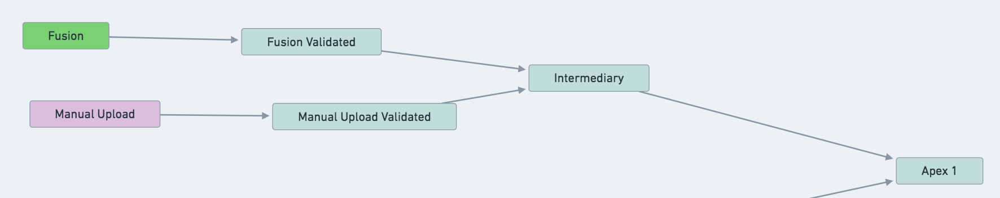
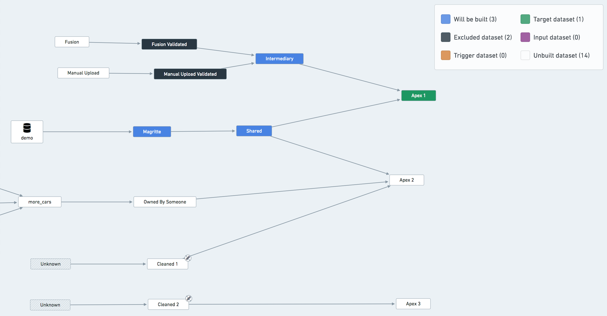

This page covers key recommendations for creating a resilient and stable pipeline over time.
Every bit of logic that generates a dataset should be versioned. This makes it easier to track regressions and changes that happened to the pipeline. Practically speaking, it boils down to:
master branch is locked on all your Code Repositories and all changes require a Pull Request and approval from a code reviewer.Squash and merge as this leaves a cleaner commit history on master."Sensitive" or "unstable" datasets should be isolated from the rest of the pipeline via a validation step. In particular, datasets created in Fusion, manual data uploads, and other types of upload are prone to data quality issues that can end up affecting your entire pipeline.
In the below example, suppose that dataset called Fusion is often experiencing data quality issues (schema changes, parsing errors, incomplete data, ...) that end up affecting the rest of the pipeline.
The solution is to create a Fusion Validated dataset that copies the data from Fusion if some validation steps pass.
Example Data Lineage Graph with validation datasets on Fusion Sheets and Manual Uploads

# Example validation code
@transform(
input=Input("/MyProject/Fusion"),
validated_input=Output("/MyProject/Fusion Validated"),
)
def validate(input, validated_input):
found_dtypes = input.dataframe().dtypes
assert len(found_dtypes) >= 8, "Schema break, column count too low"
assert ("hours", "int") in found_dtypes, "'hours' has to be an int"
validated_input.write_dataframe(input.dataframe())
Create an event-based schedule to build Fusion Validated whenever Fusion updates.
Treat Fusion Validated as an input to the other pipelines. Ignore it from the builds, and add the relevant health-checks on it. Build status is important, since you may have to contact the people in charge of updating Fusion to let them know of potential errors or issues.
The same reasoning applies to Manual Upload and Manual Upload Validated datasets.
Example Data Lineage Graph highlighting datasets excluded from the build of Apex 1

:::callout{theme="neutral"} You do not have to exclude Data Connection syncs from the build explicitly, as they are always considered up-to-date by the orchestration system. The fact that it is colored blue in the graph above does not mean that the ingestion will be triggered. :::
You might have a dataset that belongs to many different pipelines in your project. If your builds do not align perfectly, some pipelines might be blocked on building this dataset.
In this case, you should consider creating a new pipeline to build this shared dataset as frequently as needed and have the shared dataset become an input in the other pipelines (ignoring it from the schedules). However, note that such an operation significantly increases the complexity of your pipeline setup. Our recommendation is not to perform it unless absolutely necessary.
Another less invasive way of working around this problem is to build the shared resource in only one pipeline/schedule and treat it as an input in all other pipelines. For example, in the previous diagram, treat Shared as an input of one of the pipelines (i.e. exclude it from all but one schedule).
You should avoid running only part of the pipeline or running 'Full Builds' on datasets.
A pipeline is either up to date or not. If you run only part of the pipeline (e.g. only the export phase) you might end up in an inconsistent state making it harder to assess whether the pipeline is healthy. If you run a 'full build' on a terminal dataset, this build will be missing all the relevant options that the pipeline should be run with (retries, failure strategy, ignores, etc.). Whenever in need of initiating a build manually, you should use the 'Run Schedule Now' button on the Schedule overview page in order to run a build according to the schedule configuration.